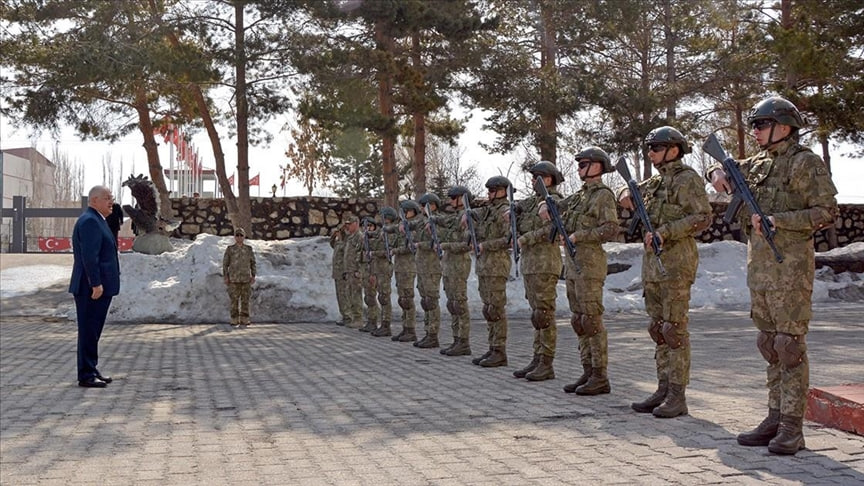
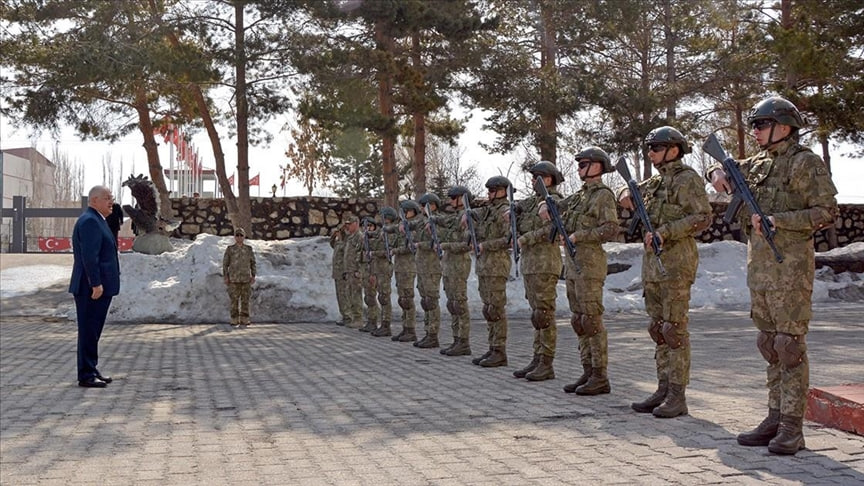

🇹🇷🇮🇶Турция готовиться к новой операции против Рабочей Партии Курдистана на севере Ирака.
OPINION
June 4, 2024

В декабре прошлого года Эрдоган заявил, (1🖼) что угроза РПК будет устранена к лету. После этого началась активная подготовка к реализации плана. 14 марта состоялось (2🖼) заседание турецко-иракской комиссии по общим усилиям для уничтожения курдского сепаратизма и возврат территорий под контроль Иракского правительства. На следующий день министр обороны Турции Яшар Гюлер посетил провинцию Хаккари (3🖼), граничащую с Ираком, а 16 марта главнокомандующий сухопутными войсками Турции Сельчук Байрактароглу отметился на приграничных с Ираком и Сирией опорных пунктах в провинции Ширнак. Военачальник проверил готовность передовых формирований ВС Турции. Вчера появилась информация, что курдские подразделения начали отводить свои отряды от линии соприкосновения в тыловые и горные районы в рамках подготовки к наступлению турок.
 

Наши операции будут продолжаться до тех пор, пока каждый дюйм гор на севере Ирака, который стал источником террористических действий, не будет защищен. Точно так же мы не остановимся, пока гнезда террористов в Сирии не будут полностью уничтожены. Даст Бог, в ближайшие месяцы мы обязательно предпримем новые шаги в этом направлении, независимо от того, кто что говорит, какие угрозы они высказывают и каковы их планы" - сказал Эрдоган.
В приграничных областях Турции проживает от 15 до 20 миллионов курдов, активно поддерживающих сепаратизм на севере Ирака и Сирии. Турция начала наносить авиационные удары по Иракскому Курдистану ещё в 80-х годах прошлого века. Экстрадиция в Турцию осужденных там активистов стала главным условием одобрения заявок Финляндии и Швеции в НАТО. Одновременно с этим США считают курдов своими союзниками в борьбе против радикального исламизма в регионе и имеют несколько военных баз на подконтрольных им территориях.
Современные войны - это почти всегда войны государств: войны за территорию или экономические привилегии, конечной целью которых всегда является править большим количеством людей или денег, чем до этого. Войны народов существовали, но чем больший контроль государства получали над людьми на протяжении веков, тем меньше таких войн оставалось. Государственная пропаганда нужна для того, чтобы убедить вас, что интересы государства - это ваши интересы. Современные представительные демократии предполагают, что народ избирает более квалифицированных людей, которые от их имени будут принимать важные общественные решения. Если государство, то есть эти выбранные люди, убеждают вас в том, что их интересы (например идти воевать против курдов или платить за эту войну) это ваши интересы - они лгут, ведь это вы их выбрали защищать ваши интересы, а не наоборот.